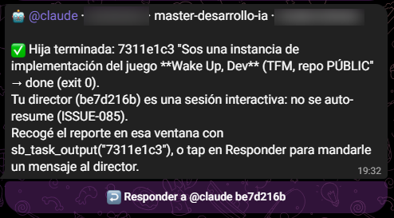

Trabajo de Fin de Máster
WAKE UP, DEV
Un videojuego 8-bit inspirado en Matrix que repasa el máster jugándolo. La IA no es solo la herramienta con la que se construyó: es parte del gameplay.
El problema
Un máster se olvida. Un juego se repite.
Terminás dieciséis módulos, cientos de notas, y a los tres meses te acordás de la mitad. Quería un repaso que no se sintiera como un repaso.
Sos Neo. Cada módulo del máster es un nivel de la Matrix custodiado por Agentes Smith — los bugs, los antipatrones, la deuda técnica. Los peleás cuerpo a cuerpo y, al aturdirlos, respondés un reto salido del contenido real del curso. Fallás, perdés una vida. Acertás, el Agente cae.

Traducción
Matrix como metáfora del máster
- Zion — el hub: elegís módulo, ves score y vidas
- Niveles — un módulo del máster cada uno, con su escenario propio
- Agentes Smith — bugs y antipatrones: se pelean y se responden
- Agente Jefe — cierra el módulo, y dispara
- El Oráculo — NPC con IA que responde dudas del módulo actual
- Píldora roja — el juego conectado a instancias headless reales

Mecánica
Pelear, aturdir, responder


El combate no es decorado. Sin el stagger —que tu golpe interrumpa el del Agente— pelear bien igual te costaba una vida cada dos segundos. Lo descubrió un bot de Playwright muriendo con respuestas perfectas.
Cómo se construyó
Un coordinador, varias manos en paralelo
El juego se construyó con el flujo que enseña el propio máster: un coordinador reparte el trabajo en instancias headless que corren en paralelo, cada una en su propio worktree de git.
El reparto se hace por blast radius: dos instancias corren a la vez solo si los archivos que van a tocar no se cruzan. Las auditorías son de solo lectura, así que corren todas juntas; los bancos de contenido nuevos también, porque cada uno tocaba un archivo distinto.
El humano no copia prompts ni espera: recibe un aviso al móvil cuando hay algo que revisar, decide y mergea. Lo que hace el humano es juzgar, no ejecutar.

De punta a punta
Reparte, trabaja, avisa, rinde cuentas
1 · Reparte
El coordinador lanza writers en paralelo, uno por archivo o módulo.
2 · Trabaja

Cada writer declara su alcance: un archivo, y nada más.
3 · Avisa

Al terminar, el aviso llega al móvil. El humano vuelve solo cuando hace falta.
4 · Rinde cuentas

El coordinador reporta qué se hizo y qué se verificó. El humano revisa eso, no el diff.